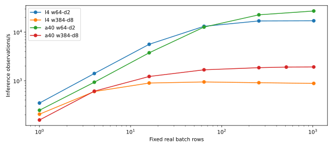

Calibration rental estimate: $0.5360. Provider billing may differ; intent-to-confirmed-deletion time includes setup, idle and storage allowance. Every failure and unvisited cell remains below.
Model-only Adam is a diagnostic loss on fixed real rows. Peaks cover completed phases; OOM logs retain failed-allocation details. Complete-loop cells use ordinary Ataraxos self-play. Three-update cells and three one-second windows measure short-run behavior, not strength or sustained throughput. Collection includes engine and inference; its share alone does not prove GPU starvation.

Separate maxima over the declared short grid, not sustained operating points. Compare matched cells in the JSON extract before attributing differences to hardware.
| Card / capacity / phase | Best observed cell | Rows or transitions/s |
|---|---|---|
| l4 / w64-d1 / inference | w64-d1-model-b1024-s0 | 29,697.2 |
| l4 / w64-d1 / optimizer | w64-d1-model-b256-s0 | 5,252.0 |
| l4 / w64-d1 / loop | w64-d1-loop-b512-s64 | 435.0 |
| l4 / w64-d2 / inference | w64-d2-model-b1024-s0 | 17,135.4 |
| l4 / w64-d2 / optimizer | w64-d2-model-b256-s0 | 3,987.2 |
| l4 / w64-d2 / loop | w64-d2-loop-b512-s64 | 444.6 |
| l4 / w128-d2 / inference | w128-d2-model-b1024-s0 | 11,496.7 |
| l4 / w128-d2 / optimizer | w128-d2-model-b256-s0 | 2,542.6 |
| l4 / w128-d2 / loop | w128-d2-loop-b512-s64 | 392.4 |
| l4 / w384-d8 / inference | w384-d8-model-b64-s0 | 944.5 |
| l4 / w384-d8 / optimizer | w384-d8-model-b64-s0 | 271.7 |
| l4 / w384-d8 / loop | w384-d8-loop-b512-s64 | 161.0 |
| a40 / w64-d1 / inference | w64-d1-model-b1024-s0 | 43,644.6 |
| a40 / w64-d1 / optimizer | w64-d1-model-b1024-s0 | 4,749.8 |
| a40 / w64-d1 / loop | w64-d1-loop-b512-s64 | 342.9 |
| a40 / w64-d2 / inference | w64-d2-model-b1024-s0 | 27,202.5 |
| a40 / w64-d2 / optimizer | w64-d2-model-b1024-s0 | 4,006.1 |
| a40 / w64-d2 / loop | w64-d2-loop-b512-s64 | 335.7 |
| a40 / w128-d2 / inference | w128-d2-model-b1024-s0 | 20,415.7 |
| a40 / w128-d2 / optimizer | w128-d2-model-b1024-s0 | 3,193.9 |
| a40 / w128-d2 / loop | w128-d2-loop-b512-s64 | 317.3 |
| a40 / w384-d8 / inference | w384-d8-model-b1024-s0 | 1,920.0 |
| a40 / w384-d8 / optimizer | w384-d8-model-b512-s0 | 493.5 |
| a40 / w384-d8 / loop | w384-d8-loop-b512-s64 | 139.8 |
| Card / capacity | Kind / batch / streams | Status | Inference obs/s | Adam obs/s | Loop transitions/s | Peak allocated GiB |
|---|---|---|---|---|---|---|
| l4 / w64-d1 | model / 1 / 0 | completed | 374.1 | 124.7 | — | 0.0 |
| l4 / w64-d1 | model / 4 / 0 | completed | 1,499.1 | 451.2 | — | 0.0 |
| l4 / w64-d1 | model / 16 / 0 | completed | 5,922.6 | 1,831.1 | — | 0.1 |
| l4 / w64-d1 | model / 64 / 0 | completed | 17,720.8 | 3,890.0 | — | 0.3 |
| l4 / w64-d1 | model / 256 / 0 | completed | 28,050.0 | 5,252.0 | — | 1.1 |
| l4 / w64-d1 | model / 1024 / 0 | completed | 29,697.2 | 4,652.0 | — | 4.2 |
| l4 / w64-d2 | model / 1 / 0 | completed | 347.5 | 105.0 | — | 0.0 |
| l4 / w64-d2 | model / 4 / 0 | completed | 1,408.8 | 410.6 | — | 0.0 |
| l4 / w64-d2 | model / 16 / 0 | completed | 5,621.3 | 1,675.0 | — | 0.1 |
| l4 / w64-d2 | model / 64 / 0 | completed | 13,188.0 | 3,461.1 | — | 0.3 |
| l4 / w64-d2 | model / 256 / 0 | completed | 16,991.8 | 3,987.2 | — | 1.2 |
| l4 / w64-d2 | model / 1024 / 0 | completed | 17,135.4 | 3,559.0 | — | 4.8 |
| l4 / w128-d2 | model / 1 / 0 | completed | 347.0 | 114.8 | — | 0.1 |
| l4 / w128-d2 | model / 4 / 0 | completed | 1,395.2 | 450.4 | — | 0.1 |
| l4 / w128-d2 | model / 16 / 0 | completed | 5,240.3 | 1,434.9 | — | 0.2 |
| l4 / w128-d2 | model / 64 / 0 | completed | 9,607.7 | 2,529.0 | — | 0.6 |
| l4 / w128-d2 | model / 256 / 0 | completed | 11,263.9 | 2,542.6 | — | 2.4 |
| l4 / w128-d2 | model / 1024 / 0 | completed | 11,496.7 | 2,281.2 | — | 9.6 |
| l4 / w384-d8 | model / 1 / 0 | completed | 205.2 | 49.9 | — | 0.3 |
| l4 / w384-d8 | model / 4 / 0 | completed | 599.9 | 148.8 | — | 0.4 |
| l4 / w384-d8 | model / 16 / 0 | completed | 896.7 | 258.5 | — | 1.1 |
| l4 / w384-d8 | model / 64 / 0 | completed | 944.5 | 271.7 | — | 3.5 |
| l4 / w384-d8 | model / 256 / 0 | completed | 910.4 | 267.6 | — | 13.2 |
| l4 / w384-d8 | model / 1024 / 0 | oom | 881.8 | — | — | 4.0 |
| l4 / w64-d1 | loop / 128 / 4 | completed | — | — | 84.1 | 0.0 |
| l4 / w64-d1 | loop / 128 / 16 | completed | — | — | 122.0 | 0.1 |
| l4 / w64-d1 | loop / 128 / 64 | completed | — | — | 148.2 | 0.1 |
| l4 / w64-d1 | loop / 512 / 4 | completed | — | — | 146.4 | 0.1 |
| l4 / w64-d1 | loop / 512 / 16 | completed | — | — | 240.3 | 0.1 |
| l4 / w64-d1 | loop / 512 / 64 | completed | — | — | 435.0 | 0.2 |
| l4 / w64-d2 | loop / 128 / 4 | completed | — | — | 79.2 | 0.0 |
| l4 / w64-d2 | loop / 128 / 16 | completed | — | — | 116.3 | 0.1 |
| l4 / w64-d2 | loop / 128 / 64 | completed | — | — | 137.1 | 0.1 |
| l4 / w64-d2 | loop / 512 / 4 | completed | — | — | 134.6 | 0.1 |
| l4 / w64-d2 | loop / 512 / 16 | completed | — | — | 220.5 | 0.1 |
| l4 / w64-d2 | loop / 512 / 64 | completed | — | — | 444.6 | 0.2 |
| l4 / w128-d2 | loop / 128 / 4 | completed | — | — | 84.8 | 0.1 |
| l4 / w128-d2 | loop / 128 / 16 | completed | — | — | 126.9 | 0.1 |
| l4 / w128-d2 | loop / 128 / 64 | completed | — | — | 149.9 | 0.2 |
| l4 / w128-d2 | loop / 512 / 4 | completed | — | — | 150.1 | 0.1 |
| l4 / w128-d2 | loop / 512 / 16 | completed | — | — | 227.1 | 0.1 |
| l4 / w128-d2 | loop / 512 / 64 | completed | — | — | 392.4 | 0.3 |
| l4 / w384-d8 | loop / 128 / 4 | completed | — | — | 48.9 | 0.4 |
| l4 / w384-d8 | loop / 128 / 16 | completed | — | — | 62.8 | 0.6 |
| l4 / w384-d8 | loop / 128 / 64 | completed | — | — | 59.5 | 1.5 |
| l4 / w384-d8 | loop / 512 / 4 | completed | — | — | 78.6 | 0.5 |
| l4 / w384-d8 | loop / 512 / 16 | completed | — | — | 125.6 | 0.8 |
| l4 / w384-d8 | loop / 512 / 64 | completed | — | — | 161.0 | 1.5 |
| a40 / w64-d1 | model / 1 / 0 | completed | 249.8 | 23.8 | — | 0.0 |
| a40 / w64-d1 | model / 4 / 0 | completed | 975.1 | 98.6 | — | 0.0 |
| a40 / w64-d1 | model / 16 / 0 | completed | 4,550.4 | 385.1 | — | 0.1 |
| a40 / w64-d1 | model / 64 / 0 | completed | 15,295.5 | 1,675.3 | — | 0.3 |
| a40 / w64-d1 | model / 256 / 0 | completed | 32,671.5 | 4,529.0 | — | 1.1 |
| a40 / w64-d1 | model / 1024 / 0 | completed | 43,644.6 | 4,749.8 | — | 4.2 |
| a40 / w64-d2 | model / 1 / 0 | completed | 247.0 | 22.8 | — | 0.0 |
| a40 / w64-d2 | model / 4 / 0 | completed | 932.6 | 114.7 | — | 0.0 |
| a40 / w64-d2 | model / 16 / 0 | completed | 3,757.0 | 357.4 | — | 0.1 |
| a40 / w64-d2 | model / 64 / 0 | completed | 12,708.6 | 1,816.2 | — | 0.3 |
| a40 / w64-d2 | model / 256 / 0 | completed | 22,704.2 | 3,858.6 | — | 1.2 |
| a40 / w64-d2 | model / 1024 / 0 | completed | 27,202.5 | 4,006.1 | — | 4.8 |
| a40 / w128-d2 | model / 1 / 0 | completed | 270.7 | 23.2 | — | 0.1 |
| a40 / w128-d2 | model / 4 / 0 | completed | 932.8 | 90.2 | — | 0.1 |
| a40 / w128-d2 | model / 16 / 0 | completed | 3,739.9 | 485.0 | — | 0.2 |
| a40 / w128-d2 | model / 64 / 0 | completed | 11,078.1 | 1,636.4 | — | 0.6 |
| a40 / w128-d2 | model / 256 / 0 | completed | 17,813.4 | 3,025.4 | — | 2.4 |
| a40 / w128-d2 | model / 1024 / 0 | completed | 20,415.7 | 3,193.9 | — | 9.6 |
| a40 / w384-d8 | model / 1 / 0 | completed | 155.7 | 21.5 | — | 0.3 |
| a40 / w384-d8 | model / 4 / 0 | completed | 609.9 | 76.4 | — | 0.4 |
| a40 / w384-d8 | model / 16 / 0 | completed | 1,223.7 | 313.7 | — | 1.1 |
| a40 / w384-d8 | model / 64 / 0 | completed | 1,677.6 | 442.3 | — | 3.5 |
| a40 / w384-d8 | model / 256 / 0 | completed | 1,855.8 | 482.9 | — | 13.2 |
| a40 / w384-d8 | model / 1024 / 0 | oom | 1,920.0 | — | — | 4.0 |
| a40 / w64-d1 | loop / 128 / 4 | completed | — | — | 56.7 | 0.0 |
| a40 / w64-d1 | loop / 128 / 16 | completed | — | — | 98.2 | 0.1 |
| a40 / w64-d1 | loop / 128 / 64 | completed | — | — | 127.9 | 0.1 |
| a40 / w64-d1 | loop / 512 / 4 | completed | — | — | 73.5 | 0.1 |
| a40 / w64-d1 | loop / 512 / 16 | completed | — | — | 151.3 | 0.1 |
| a40 / w64-d1 | loop / 512 / 64 | completed | — | — | 342.9 | 0.2 |
| a40 / w64-d2 | loop / 128 / 4 | completed | — | — | 53.7 | 0.0 |
| a40 / w64-d2 | loop / 128 / 16 | completed | — | — | 94.3 | 0.1 |
| a40 / w64-d2 | loop / 128 / 64 | completed | — | — | 129.1 | 0.1 |
| a40 / w64-d2 | loop / 512 / 4 | completed | — | — | 57.0 | 0.1 |
| a40 / w64-d2 | loop / 512 / 16 | completed | — | — | 141.5 | 0.1 |
| a40 / w64-d2 | loop / 512 / 64 | completed | — | — | 335.7 | 0.2 |
| a40 / w128-d2 | loop / 128 / 4 | completed | — | — | 56.1 | 0.1 |
| a40 / w128-d2 | loop / 128 / 16 | completed | — | — | 89.9 | 0.1 |
| a40 / w128-d2 | loop / 128 / 64 | completed | — | — | 121.3 | 0.2 |
| a40 / w128-d2 | loop / 512 / 4 | completed | — | — | 82.1 | 0.1 |
| a40 / w128-d2 | loop / 512 / 16 | completed | — | — | 147.7 | 0.1 |
| a40 / w128-d2 | loop / 512 / 64 | completed | — | — | 317.3 | 0.3 |
| a40 / w384-d8 | loop / 128 / 4 | completed | — | — | 31.7 | 0.4 |
| a40 / w384-d8 | loop / 128 / 16 | completed | — | — | 42.8 | 0.6 |
| a40 / w384-d8 | loop / 128 / 64 | completed | — | — | 46.4 | 1.5 |
| a40 / w384-d8 | loop / 512 / 4 | completed | — | — | 52.6 | 0.5 |
| a40 / w384-d8 | loop / 512 / 16 | completed | — | — | 89.3 | 0.8 |
| a40 / w384-d8 | loop / 512 / 64 | completed | — | — | 139.8 | 1.5 |
| a40 / w384-d8 | model / 512 / 0 | completed | 1,909.4 | 493.5 | — | 26.2 |
| Attempt | Outcome | Deleted | Estimated dollars |
|---|---|---|---|
| 403dfd06b390 | KeyboardInterrupt | deleted | 0.19040 |
| fb0ac810e0fe | complete | deleted | 0.05469 |
| ba8ef0fbf769 | TimeoutError | deleted | 0.01311 |
| da1c0f298a40 | complete | deleted | 0.07471 |
| 2d9946bafb53 | RuntimeError | deleted | 0.20307 |
Scientific comparison not started: ETU-123 disconnect-safe lifecycle requires integration; final live-workflow proof timed out during guardian bootstrap before training. L4 batch512 and collection profiler remain unmeasured.
$3 remains reserved for ETU-123 within the same $15 ceiling.
unlaunched
{
"status": "unlaunched"
}